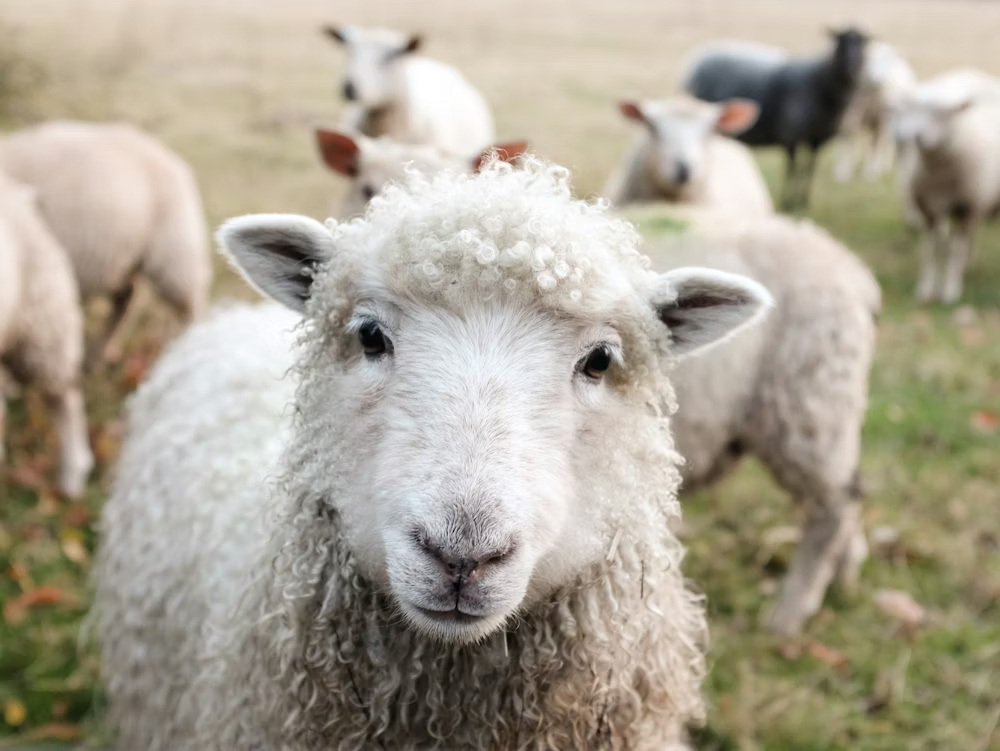

Silvi-Pastoral / Horti-Pastoral
The "Green Grazing" Model: Integrating timber or fruit trees with livestock pastures.
1. Site Feasibility & Species
🌳 Tree Choice
Fodder or Fruit.
Silvi: Use Nitrogen-fixing trees (Subabul, Acacia) that provide leaf
fodder.
Horti: Use hardy fruit trees (Mango, Cashew) that can withstand animal
presence.
🌱 Pasture Grass
Shade Tolerant.
You cannot use standard lawn grass. Use shade-tolerant, high-protein species like
Stylosanthes, Cenchrus, or Guinea Grass.
🐑 Animal Mix
Grazers vs Browsers.
Sheep (Grazers): Eat grass on the ground (Good for orchards).
Goats (Browsers): Eat leaves (Good for established forestry, dangerous for
young fruit trees).
2. Infrastructure & Layout
The secret to success is "Rotational Grazing" to prevent soil compaction.
🚧 Construction Specs
- Paddocks: Divide the land into 4-6 fenced zones (Paddocks). Animals move to a new zone every week.
- Tree Guards: Essential for the first 3 years. Use bamboo or wire mesh to stop animals from eating sapling bark.
- Water Points: Centralized water trough accessible from multiple paddocks.
3. The Nutrient Cycle
Animals mow the grass, fertilize the soil, and the trees provide the climate.
Grows Grass & Trees
Eat Grass (Mowing)
Instant Fertilization
Shade cools animals
4. Operational Calendar
Managing the grass height is critical. Too short = soil erosion. Too tall = unpalatable.
No Grazing. Remove animals. Let the grass establish roots and grow seeds. Cut grass manually if needed (Cut-and-Carry).
Introduce animals to Paddock 1. Move to Paddock 2 after 7 days. This allows Paddock 1 to regrow for 3-4 weeks.
Prune lower branches of trees to let sunlight hit the grass. Feed the pruned leaves (fodder) to animals as a protein supplement.
Pasture will dry up. Move animals to shed. Feed preserved hay/silage and tree leaves.
5. Risks & Solutions
⚠️ RISK: SOIL COMPACTION
Hoof Damage. If animals stay in one spot too long, their hooves pack the soil hard, killing grass roots and preventing rain infiltration. Solution: Rotate them frequently.
| Problem | Solution |
|---|---|
| Debarking (Eating Bark) | Goats/Sheep strip bark when hungry. Apply lime wash to trunks or use tree guards. |
| Parasites (Worms) | Grazing on short grass increases worm intake. Keep grass above 10cm height. |
6. Economics
💰 Dual Cash Flow
- Short Term: Sale of animals (meat/wool) every 6-8 months.
- Long Term: Sale of Timber or Fruit harvest every year.
📉 Cost Reduction
- Weeding Cost: $0. Animals eat the weeds.
- Fertilizer Cost: Reduced by 50% due to manure distribution.
- Feed Cost: Reduced by 60% due to free grazing.